CAPTURAS REAIS · VERSÃO LOCAL · OUTUBRO DE 2026
Mais controle.
Menos tentativa no escuro.
Um guia prático para preparar as referências, dizer quem vira quem e conferir o resultado no Henge.

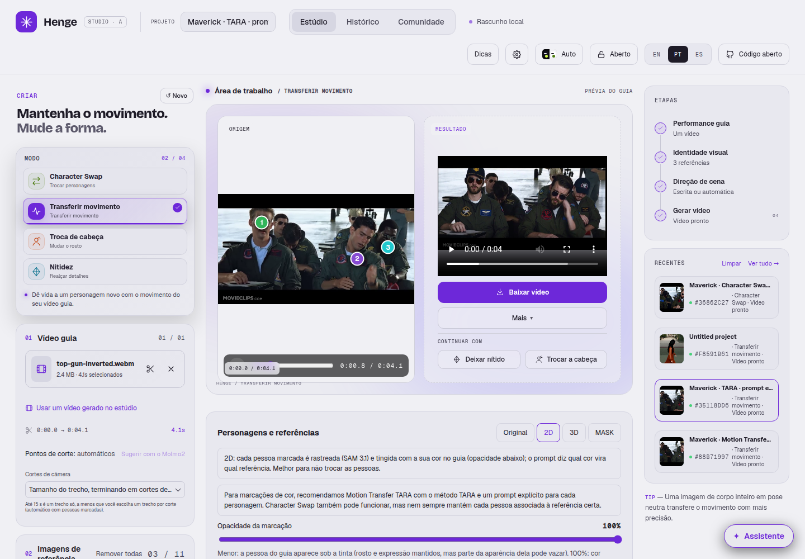
01 · APARÊNCIA
Escolha referências que distingam as pessoas
Rosto, cabelo, boné, óculos, barba e roupa devem estar visíveis. Quanto mais parecidas as referências, mais importante descrever o que diferencia cada uma.
Uma identidade por personagem
No cartão de cada personagem, selecione a referência correspondente. Se selecionar várias Pictures no mesmo cartão, elas devem mostrar a mesma identidade, por exemplo em ângulos diferentes.
Evite usar uma imagem de grupo como se fosse a referência de uma única pessoa.

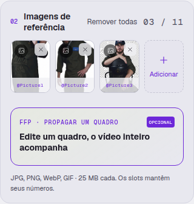
02 · QUEM VIRA QUEM
A cor acompanha a pessoa, não o lugar na tela
Crie um personagem por identidade, escolha uma cor e marque a pessoa correta no vídeo. Vincule sua Picture nesse mesmo cartão.
Se o terceiro personagem passar para a frente, ele continua sendo o personagem ciano. Se ficar de costas, mantenha a mesma identidade e preserve a orientação do guia.

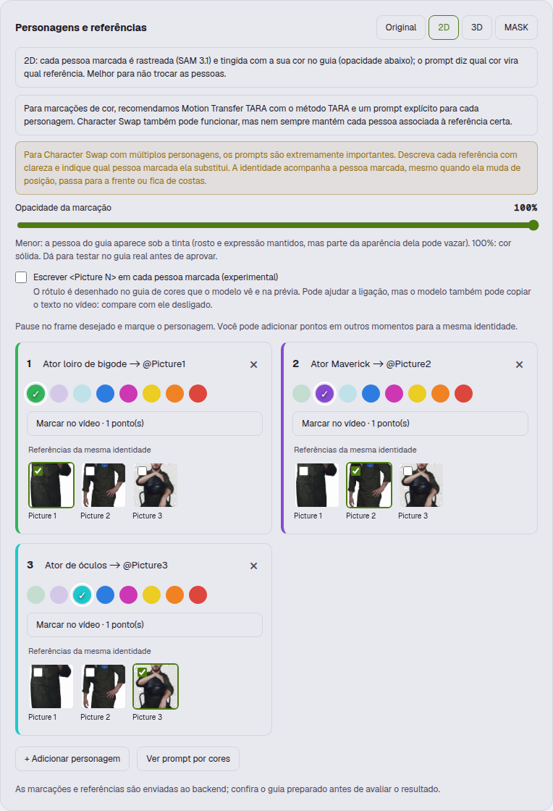
Como escolher a opacidade?
Os testes ilustrados usaram 100%: a área marcada fica em cor sólida. Uma opacidade menor preserva mais do rosto e da expressão do guia, mas também pode deixar a aparência original influenciar a troca. Compare no mesmo trecho; não há um valor que funcione melhor em todos os casos.
03 · DIREÇÃO
Em múltiplos personagens, o prompt é extremamente importante
Escreva uma associação explícita para cada pessoa. Inclua os atributos que precisam permanecer: qual boné, quais óculos, cabelo, barba e roupa.

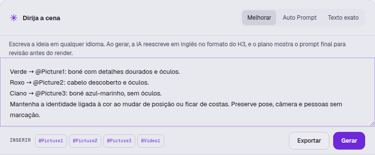
Um bom prompt precisa responder
- Qual pessoa marcada recebe cada Picture?
- Quais detalhes distinguem as referências?
- O que vem do guia: pose, direção do corpo, gestos, câmera e timing?
- Quais pessoas e partes do cenário devem permanecer intactas?
Ver um exemplo completo para Motion Transfer TARA
O exemplo evita posições fixas como “sempre à esquerda”. Com Texto exato, ajuste o gatilho ao modelo: motion_transfer: para Motion Transfer e body_swap: para Character Swap.
motion_transfer: subject_definitions: <Subject 1> is the man in <Picture 1>: full dark beard and mustache, dark aviator sunglasses, a dark pilot cap with a gold emblem and gold details, and an olive-green flight suit with patches. Replace the GREEN-marked man in <Video 1> with this exact appearance from <Picture 1>, including the cap and sunglasses. <Subject 2> is the man in <Picture 2>: swept-back dark hair, full dark beard and mustache, dark aviator sunglasses, uncovered head, and an olive-green flight suit with red and blue chest patches. Replace the PURPLE-marked man in <Video 1> with this exact appearance from <Picture 2>, including his uncovered dark hair and sunglasses. <Subject 3> is the man in <Picture 3>: a dark navy baseball cap with a light front emblem, full brown beard and mustache, visible eyes without sunglasses, and an olive-green flight suit. Replace the CYAN-marked man in <Video 1> with this exact appearance from <Picture 3>, including his navy cap and visible eyes. summary: [Video 1] motion_transfer: GREEN person becomes <Subject 1> from <Picture 1>; PURPLE person becomes <Subject 2> from <Picture 2>; CYAN person becomes <Subject 3> from <Picture 3>. Each reference supplies only its assigned person's identity, facial features, hair, headwear, eyewear and outfit. detailed_description: The three assigned people follow their own source performance frame by frame: the same location, seated body pose, hand gestures, head movement, gaze and facial expression as their corresponding marked person in <Video 1>. Transfer appearance from the assigned picture while keeping the guide's choreography and timing. The green, purple and cyan overlays are temporary selection annotations and disappear completely in the finished video. Keep each assigned identity stable throughout the shot. Preserve the appearance and performance of every unmarked person. Preserve the original classroom, desks, papers, framing, lighting and camera movement.
Auto Prompt / Melhorar: revise a descrição final de cada referência antes de aprovar. Texto exato: confira você mesmo a consistência das associações ao longo do vídeo.
04 · RECEITA
Para marcações de cor, comece pelo TARA
Recomendamos Motion Transfer TARA com o método TARA e um prompt explícito por personagem. Foi uma combinação que funcionou bem no primeiro shot do teste ilustrado.
Ao selecionar o LoRA TARA, o método TARA é marcado automaticamente. Outros LoRAs continuam disponíveis, com um aviso de recomendação.
Character Swap também pode funcionar. A comparação melhorou bastante depois de descrevermos as referências com mais precisão. A receita precisa ser validada nos outros shots antes de considerá-la confiável para o vídeo inteiro.

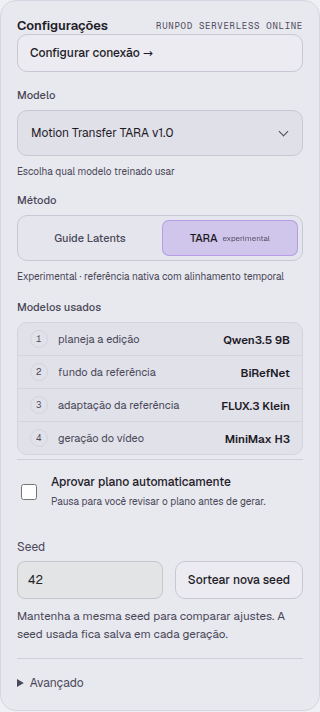
Ver os controles avançados

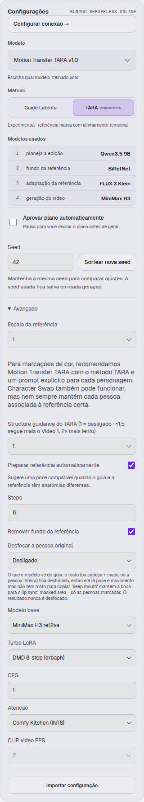
Altere uma opção por teste e guarde as configurações com a seed. Parâmetros mais fortes não significam automaticamente uma identidade melhor.
05 · COMPARAÇÃO CONTROLADA
Mantenha a seed ou sorteie outra
A seed fica visível nas configurações. Digite um número para repeti-lo ou use Sortear nova seed. O botão só muda o valor; não inicia a geração.

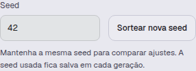
Para comparar um ajuste de prompt, mantenha a seed e as demais configurações. Depois de escolher uma receita, experimente outras seeds para conferir a estabilidade. Mudar o prompt, o modelo ou o backend também pode mudar o resultado.
A seed base fica salva no job e aparece ao abrir o resultado. Você pode recuperá-la junto com as configurações daquele teste.
06 · CONTINUIDADE
Revise os cortes e marque quem reaparece

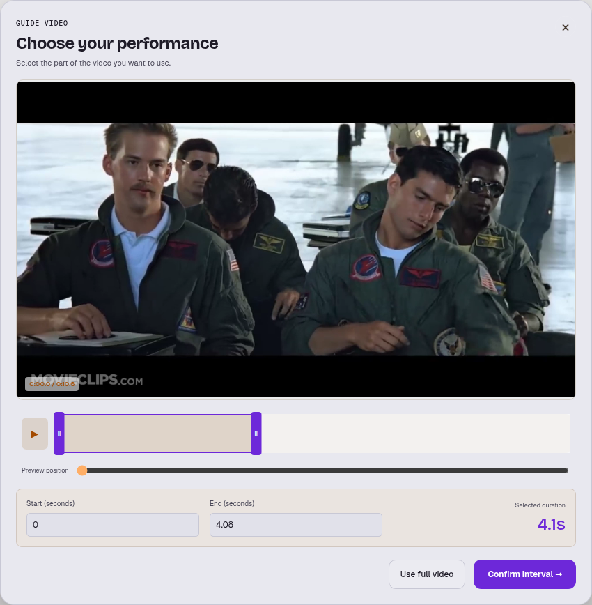

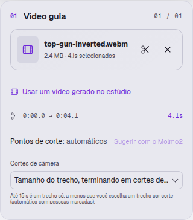
Use os cortes de câmera para separar planos. O contexto entre segmentos ajuda a continuar uma tomada; um corte de câmera precisa ser tratado como um novo plano.
Uma pessoa vista de costas continua sendo a mesma pessoa. Adicione um ponto no novo shot quando ela reaparecer e confira a máscara. Não troque sua identidade só porque a posição ou a ordem na tela mudou.
Com melhoria de prompt ativa, o Henge confere quem foi rastreado em cada shot e prepara as referências daquele trecho. Uma marcação ausente ou incorreta ainda precisa de revisão.

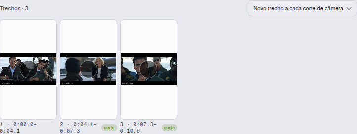
07 · ÁREA EDITADA
A máscara controla onde; o prompt ajuda a definir quem
O modo MASK limita a região regenerada e pode ajudar a preservar o cenário e as pessoas sem marcação. A máscara combinada, sozinha, não garante qual referência pertence a cada personagem.

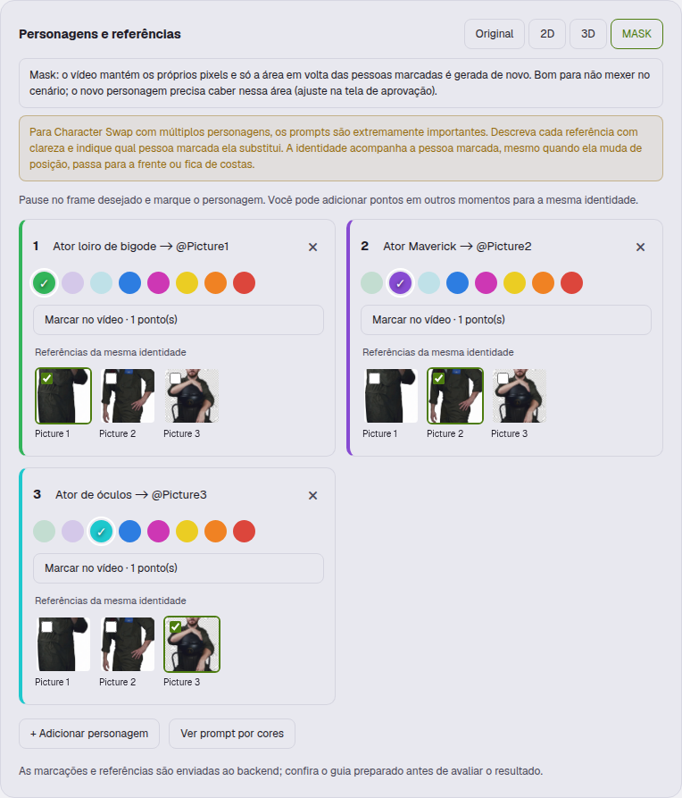
Para uma troca difícil, uma abordagem a testar é editar uma pessoa por vez, com máscara e referência individuais. Esse fluxo ainda precisa de validação; não é apresentado aqui como garantia de resultado perfeito.
08 · ANTES DO RENDER
Revise o plano e a prévia das máscaras
Deixe Aprovar plano automaticamente desligado enquanto estiver ajustando uma receita. Confira se o plano descreveu corretamente cada referência e se cada máscara está na pessoa certa.

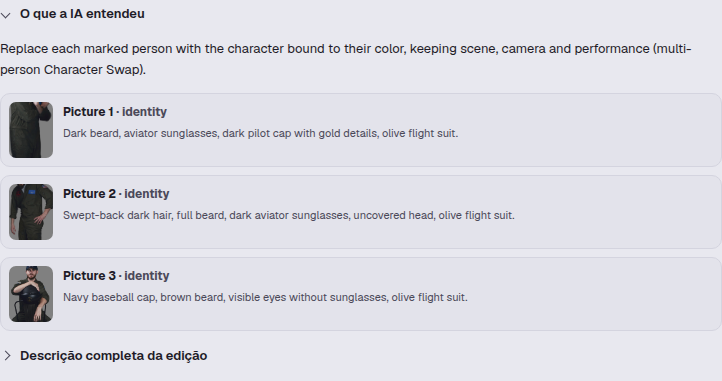

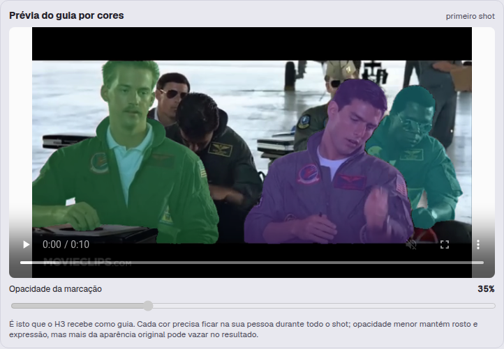
09 · VALIDAR
Compare guia, resultado e referências
Use Guia + resultado + referências para avaliar a associação e o movimento. Pause no mesmo instante e confira cada pessoa, incluindo as que não foram marcadas.

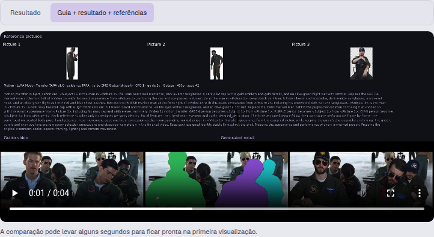
Identidade
Rosto, cabelo, boné, óculos, barba e roupa correspondem à Picture certa?
Performance
Pose, gesto, vista de costas e direção do olhar continuam coerentes com o guia?
Preservação
As pessoas não marcadas e o cenário foram mantidos?
Continuidade
Há mudança de identidade, acessórios ou pose nas junções?
Ver o resultado do primeiro shot usado neste guia

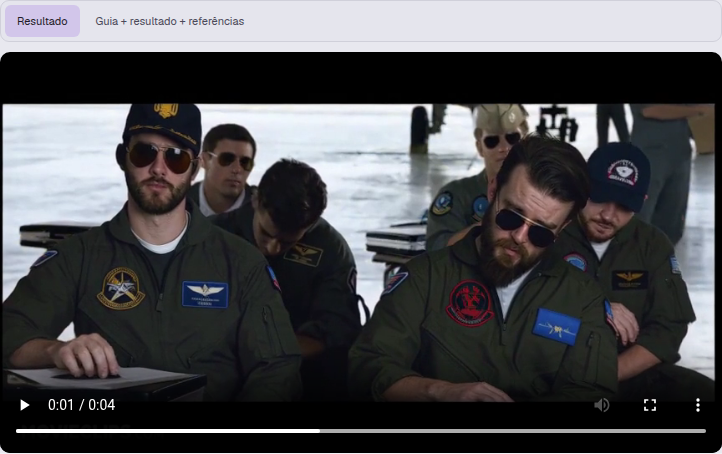
Esse é um exemplo de teste concluído, não uma garantia de comportamento em qualquer vídeo.
10 · OUTROS MODOS
Troca de cabeça e nitidez têm objetivos diferentes
Troca de cabeça
Use para substituir a cabeça/rosto preservando a performance do guia. Revise a seleção e a referência em vez de tentar descrever uma troca de corpo inteira.

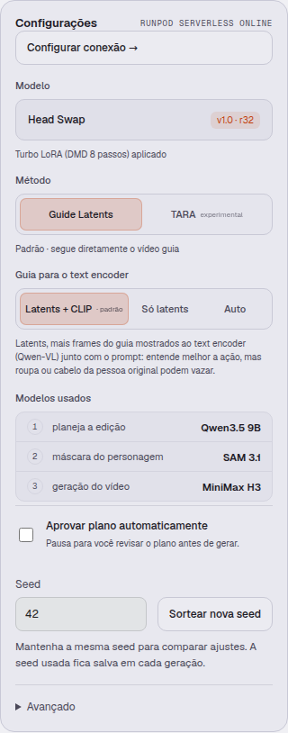
Nitidez
Use para refinar um vídeo ou aumentar a resolução de saída. Mais nitidez não corrige uma identidade trocada; resolva a associação primeiro.

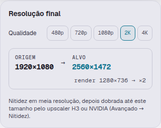
Essas capturas mostram os controles dos modos; nenhuma nova geração foi iniciada para produzi-las.
OPCIONAL · PREPARAR A CENA
Um quadro editado ou um novo cenário
O controle de primeiro quadro permite preparar uma referência de um frame para orientar o vídeo. Confira o quadro e o intervalo escolhido antes de usá-lo; ele não substitui a revisão dos demais shots.

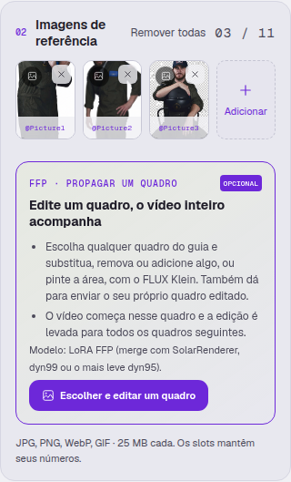
Para mudar o ambiente, use a imagem de Novo cenário. A moving plate prepara o fundo acompanhando o movimento da câmera; revise as bordas e oclusões das pessoas.

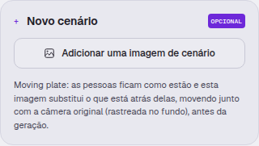
As capturas mostram os controles disponíveis; nenhum quadro foi editado nem cenário gerado para este guia.
SAÍDA · SOM
Escolha de onde vem o áudio
Manter áudio original copia o áudio do guia para o resultado. Áudio gerado usa o som produzido pelo modelo compatível.
Condicionamento de áudio envia o som do guia ao modelo para orientar a performance. Não é a mesma coisa que apenas copiar o áudio para o arquivo final.
Confira os requisitos indicados nos controles antes de usar geração ou condicionamento de áudio.

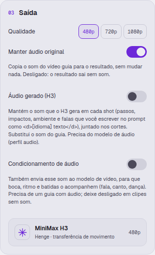
REPRODUZIR E COMPARAR
Abra um teste pelo Histórico
Busque pelo projeto ou modelo e abra a geração desejada. Confira o resultado, o plano e a seed usados, em vez de depender apenas dos ajustes que estão atualmente no formulário.

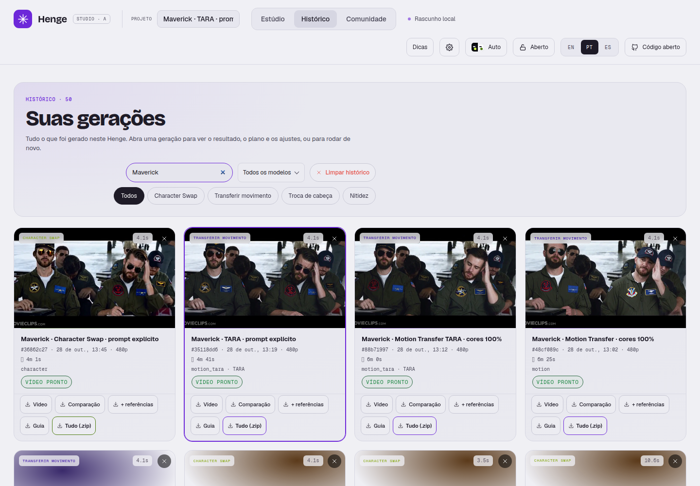
Nomear testes com modelo e mudança principal ajuda a comparar versões: por exemplo, “TARA · prompt explícito · seed 42”.
11 · OPCIONAL
Molmo ajuda a analisar; você revisa a marcação
Em Configurações → Molmo2, escolha usar ou não o modelo, a pasta do checkpoint, o tempo que ele fica carregado e o detalhe das imagens.

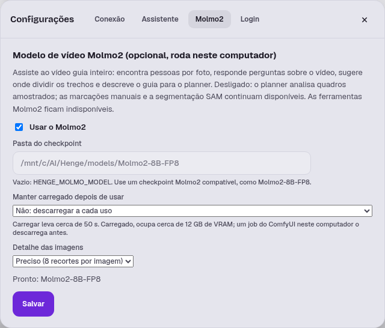
Desligado, o planejamento usa quadros amostrados; as marcações manuais e a segmentação SAM continuam disponíveis. As ferramentas específicas do Molmo ficam indisponíveis. Essa configuração se refere à execução local do Molmo.
Sugerir com o Molmo2 fica bloqueado durante uma geração. Quando uma sugestão está em andamento, use Cancelar para interrompê-la.
12 · AJUDA NA DIREÇÃO
Use o assistente para preparar e revisar
Peça primeiro uma análise do vídeo e das referências. Depois confira as marcações e o prompt antes de mandar gerar.
“Descreva o que diferencia estas três referências e confira se cada uma está ligada ao personagem correto em cada shot.”
Uma boa descrição precisa acompanhar a pessoa quando ela muda de posição. Revise as propostas do assistente: ele também pode omitir detalhes ou confundir identidades.

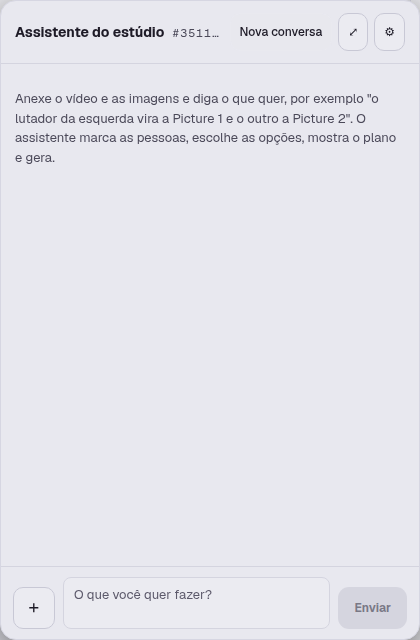
PARA SEU PRÓXIMO TESTE
Uma mudança de cada vez
- Escolha um trecho curto e referências fáceis de distinguir.
- Marque cada identidade e confira as máscaras, inclusive após cortes.
- Descreva os atributos de cada Picture e a associação com sua cor.
- Fixe a seed e confirme modelo, método e opacidade.
- Gere e compare pessoa por pessoa; registre o que faltou.
- Mude uma variável e repita. Depois valide nos demais shots.
As capturas são registros de uma versão da interface. Os controles e os resultados podem mudar em versões futuras. Confira sempre a seed e o plano salvos no seu próprio job.